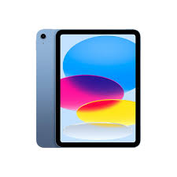
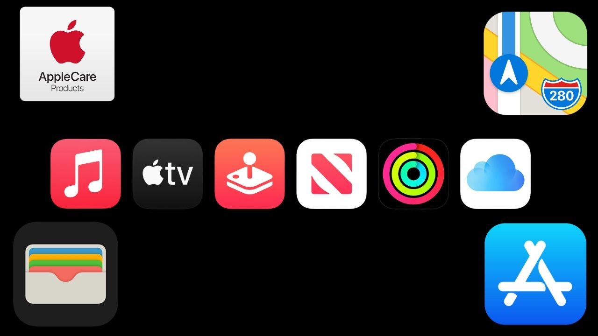

Apple Inc. is a leading technology company known for its innovative products and services. Founded in 1976 by Steve Jobs, Steve Wozniak, and Ronald Wayne, Apple started as a computer manufacturer, producing the Apple I and Apple II. Over the years, the company has evolved into a global powerhouse in consumer electronics, software, and digital services.
iPhone: Launched in 2007, the iPhone revolutionized the smartphone industry and set a new standard for mobile devices. It combined a phone, an iPod, and an internet communicator into a single device, introducing the concept of a touchscreen interface that would become the hallmark of smartphones. The original iPhone featured a 3.5-inch screen, a 2-megapixel camera, and 4 or 8 GB of storage, which was groundbreaking at the time.

iPad: The iPad was introduced in 2010, creating a new category of devices that bridged the gap between smartphones and laptops. With its large touchscreen interface, the iPad allows for a unique experience that is more versatile than a smartphone but more portable than a traditional laptop. Initially marketed as a device for consuming media, the iPad has evolved into a powerful tool for productivity, creativity, and education.
Mac: Apple's line of personal computers, including the MacBook, iMac, and Mac Pro, is celebrated for its elegant design, robust performance, and user-friendly operating system, macOS. The Mac revolutionized personal computing when it was first introduced in 1984, featuring a graphical user interface that was intuitive and accessible compared to the text-based systems of the time. This innovative approach laid the groundwork for future developments in computing.
Apple Watch: Released in 2015, the Apple Watch quickly became the leading smartwatch in the market, combining health and fitness tracking with seamless connectivity to the iPhone. The Apple Watch is more than just a timepiece; it is a powerful health monitoring device that can track various metrics, including heart rate, activity levels, and even ECG readings. This focus on health and wellness has made the Apple Watch a vital accessory for users looking to improve their fitness and monitor their overall well-being.
Services: Apple has expanded its revenue stream through various services, including the App Store, Apple Music, Apple TV+, iCloud, and Apple Arcade. These services enhance the user experience and create a loyal customer base.
